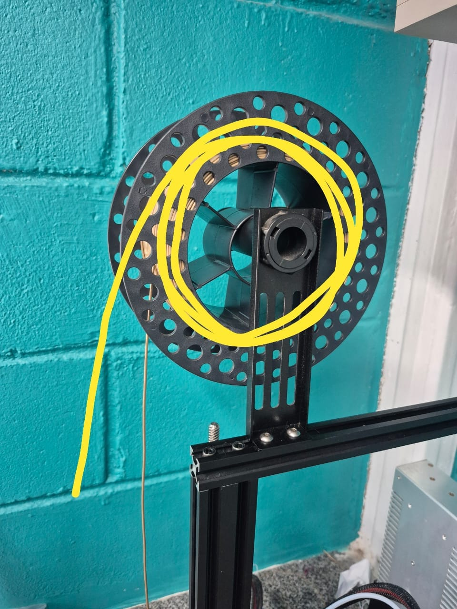

Conceitos essenciais
Material termoplástico fornecido em carretel. Ao aquecer, ele amolece e pode ser empurrado pelo bico.
O carretel deve girar livremente, alimentando o filamento na direção da extrusora sem cruzar ou prender as voltas.
Mecanismo que prende e movimenta o filamento. A trava libera manualmente a passagem.
Tubo que conduz o filamento da extrusora até o hotend sem deixá-lo escapar do caminho.
Conjunto que aquece o filamento e o deposita. A saída de material confirma que o caminho foi percorrido.
1. Ligue a Ender 3
Localize o interruptor na lateral direita e pressione o lado marcado com I.


Aguarde a tela inicial e pressione o encoder para entrar no menu.

2. Aqueça o bico e a mesa
Gire até Temperatura, pressione o encoder e selecione Pre-aquecer PLA. No submenu, confirme novamente Pre-aquecer PLA.

Observe o indicador superior destacado e aguarde a temperatura atual do bico chegar a 180 °C.

3. Insira o filamento
Antes de chegar à extrusora, confira o carretel no suporte. O filamento deve sair no sentido marcado em amarelo e descer livremente em direção à entrada, sem passar por baixo de outra volta.

Localize a extrusora, circulada em amarelo, e a trava marcada em vermelho.

Aperte a trava e mantenha-a pressionada.

Com a trava pressionada, introduza a ponta pelo furo e empurre o filamento para dentro do guia.

4. Confirme a saída pelo bico
Continue empurrando até uma pequena quantidade de material sair pelo bico. Depois, solte a trava. Não toque no material nem no bico quente.